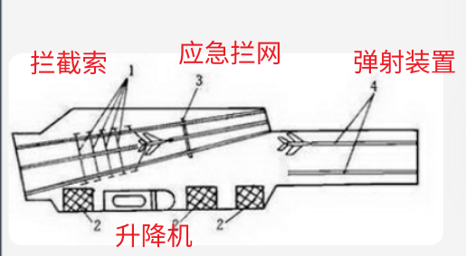
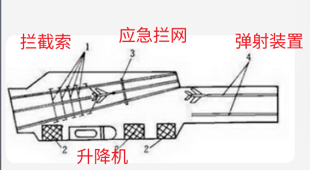

航概题库分类总结
内容：航空航天概论B期末题库（文科试卷）。基于刷题小程序总结，涵盖了绝大部分内容。
时间：2023春季学期。
第一章 1~135
科学知识：
国际空间站：16个国家研制，第一个模块由俄罗斯发射
通讯卫星：一般为地球静止轨道卫星
速度与马赫数：

临近空间：距地面20km~100km
高动态临近空间Ma>1，低动态临近空间Ma<1.
组合式飞艇静升力占60%~70%
第一宇宙速度：环绕地球，7.91km/s
第二宇宙速度：离开地球，11.18km/s
第三宇宙速度：离开太阳系，16.6km/s
特殊多选：
- 隐身技术全选
- 直升机布局全选
- 雷达隐身不降温
- 红外隐身不吸波
- 推力矢量不选巡航
- 应用卫星不选试验
- 应用卫星包括不选技术
- 卫星用途不选商业
- 载人航天不选日本
- 战斗机不指挥
- 超声速战斗机不选低空
- 航天飞机不安全不全能
- 飞机解决的关键问题不选方便维护
特征：
鹞：
- 垂直起落发动机
- 涡轮风扇发动机
- 自行车式起落架
- 小起落架起支撑、稳定作用
- 转向喷口0~98.5°
- 6个辅助喷口
鱼鹰：倾转旋翼
运10：世界屋脊
大型液体火箭：现代航天技术基础
涡轮喷气发动机突破声障
X1：突破声障
SR-71：突破热障
T-50：俄罗斯第五代战机
F-117：隐身飞机第一个实用型号
BZK-005：双尾撑布局，具有隐身能力（隐身双马尾）
具有隐身能力的飞机选F-22和F-35
ARJ21-700：中国首架自主知识产权涡扇支线客机
A380：最大旅客机
X-29：前掠翼
SR-71：飞得最快
米格-9：航炮与近期道口位置不合理
米格-25：飞得最高
美国DAPRA全新空天战机是X-37B
美国捕食者：倒V型尾翼
土星5号载阿波罗11号
J-8II优势选波阻小和焦点变化小
超过3倍声速：米格-25和SR-71
空天飞机尚未开始使用
航天技术核心：火箭
过失速机动：有利于近距格斗，提高击毁概率
第一个提出现代飞机：乔治·凯利
礼炮号：第一个载人航天站
波音737：2台发动机
A380飞机：550座级
时间数字：
- C919：2017首飞
- 第一颗人造地球卫星：1957发射
- 苏联东方1号：1961发射
- 苏联礼炮：1971发射
- 挑战者：1986失事
- 哥伦比亚：1981第一架航天飞机，2003失事，失事直接原因是热障
- 莱特兄弟：1903年12月17日美国
- 法国气球：1783年11月21日
- 美国航天飞机：1981
- 运20：最大起飞重量220吨
- “旅行者”1号：36年飞出太阳系
- 大飞机立项：2007年2月26日
- 协和号：1969
- 首次登月：1969美国
国产系列：
- 载人飞船发射场：酒泉
- 载人飞船着陆场：内蒙古
- 新一代大推力火箭发射场：文昌
- 风云系列：气象卫星
- 东方红系列：通信卫星
- 长征系列：运载火箭
- 歼6：我国第一代超声速战斗机
- 歼789：我国第二代
- 歼10：我国第三代
- 歼15：外形不选V
- 歼20：鸭翼双发
- 歼31：单座双发
- 北斗：导航定位卫星，共有3颗卫星
- 神舟3号：第一次带模拟假人（三甲/3假）
- 神舟5号：2003年发射，由长征2号F发送，杨利伟入太空第一人
- 神舟6号：也由长征2号F发送，有龙哥和胜哥
- 神舟7号：2008年发射，没有龙哥，刚哥第一个出舱
- 神舟8号：与天宫1号对接（宫吧）
- 神舟10号：王亚平太空授课
- 长征2号F：长征2号系列最新改进型号（fresh 新），使用液体火箭发动机
- 长征4号：发射太阳同步轨道卫星（央视/阳4）
- 长征5号：新一代重型运载火箭
- 长征7号：载人
- 嫦娥1号：2007年10月24日，由长征3号甲发送（三甲医院/3甲1月）
- 嫦娥2号：飞往深空
- 嫦娥3号：玉兔号月球车；探月方式是软着陆
- 嫦娥探测计划不选登月
- 天宫2号：我国第一个真正意义太空实验室
- 天舟1号：首个在轨补加推进剂，与神舟8910对接
- “天链”1号：2008
- 我国第一颗人造地球卫星东方红：1970
- 直9，8，5：我国直升机工业主要产品
- 超7：枭龙/FC-1，中巴共同投资
- 欧洲空客在天津投产
- 歼轰7：飞豹
- 60周年阅兵：
- 多选不选歼6
- 60周年阅兵预警机KJ-2000
- 女飞行员K-8
- 空中梯队全选
- 四发喷气飞机是空警2000
- 汶川地震使用Mi-26
- 北京一号属于通用飞机
- 北京二号是探空火箭
分类：
- 第一代超声速战斗机：米格19，F100
- 第二代超声速战斗机：米格21，F104
- 第三代战斗机不选F-4
- 第四代战斗机不选Su-47，典型代表美国F-22
- 二战飞机不选苏联
- 隐身飞机不选JAS
- 直升机不是飞机
- 监视敌方的机型是预警机
- 前掠翼布局飞机选金雕和X-29
- 无人航天器分为卫星和探测器
图片题：
伸缩管式加油

插头椎管式

全球鹰

结构名称
升降舵在平尾上
方向舵在立尾


第二章 136~297
方程关系：
- 连续性方程：流体横截面变大，流速变小（质量守恒）
- 伯努利方程：速度增加，压力减小（能量守恒）
- 风洞试验基本依据是相对运动原理
- 标准大气音速：341m/s
- 可压缩性越大，声速越小
力相关：
- 多旋翼无人机：电动机驱动
- 襟翼：增加升力，不在巡航时使用（可以增阻，不要误选）
- 升力贡献性质相近选边条和鸭翼
- 压差阻力：只与形状和面积有关，流线型减小压差阻力
- 摩擦阻力不选形状，由大气粘性产生
- 诱导阻力因素不选部件相对位置
- 升力与机身面积无关，不与迎角成正比（失速前，迎角增大升力增大），与空气密度、速度平方、机翼面积成正比
- 减小干扰阻力措施全选（减小干扰无干扰项）
- 整流片减小干扰阻力
- 低速飞机无激波阻力
- 减小激波阻力不选平直机翼
- 零升阻力不选诱导阻力
- 诱导阻力伴随升力产生
- 翼梢小翼减小诱导阻力
- 高尔夫小坑不选两个摩擦
- 碎玻璃全部向外
- 低空超音速飞行发动机功率增大
- 边界层多选不选不会影响阻力

构造：
前掠翼选两个性能好
变后掠翼：改善性能，提高马赫
机翼上反角：横向静稳定性
副翼操纵滚转
超临界翼型不选尖锐
变后掠翼缺点不选阻力大
三角机翼优点不选升力大
高亚声速民用采用后掠翼延缓激波
低速飞行采用大展弦比平直机翼
大展弦比平直机翼特点不选低速诱导阻力大
超声速飞机厚度小，稍根比小，展弦比小，后掠角大，长细比大。采用三角机翼。
迎角为零时，平凸翼型和层流翼型可产生升力
飞行器操纵与行为：
民用飞机飞行速度指巡航速度
军用飞机飞行速度指最大飞行速度
飞行性能不选角选速度
改变方向且增加高度：战斗转弯
增大速度且提高准度：俯冲
前推驾驶杆，升降舵偏转，俯仰运动
左右摆驾驶杆，副翼偏转，滚转运动
左脚蹬或右脚蹬，方向舵偏转，偏航运动
迅速获得高度优势：跃升
直升机操纵没有襟翼
直升机
- 优点不选航程
- 与固定翼飞机相比，缺点全选
- 和旋翼机相比选驱动方式不同
- 与其他飞机相比不选平飞速度快
- 克服反扭距方法不选方向相同
鸭式飞机优点不选稳定性好
变距操纵：桨叶周期挥舞
脚操纵：改变尾桨推力
桨叶叶距：拉力改变
尾桨变距目的是改变侧向力
倾斜锥前倾，向前飞行
尾旋机动：歼击机和教练机（尖叫鸡）
尾旋特点不选半径大
尾旋同时绕三轴旋转（瞎转）
三轴稳定法不选自转轴
姿态稳定不选姿态控制
重力梯度稳定不选精度高
自旋稳定形状圆柱，球，椭球都行
纵向稳定性重心在焦点前，稳定力矩方向相反
上角是为了横向静稳定性
腹鳍为了方向静稳定性
飞机稳定性选动稳定性至关重要
再入方式有纯弹道式，半单道式，跳跃式，滑翔式（全选）
跳跃式：地球轨道以外空间返回
半单道式：神舟系列
纯弹道式：圆球体或钝头
对接不选飞船与卫星
发射窗口因素全选
航天器任务阶段不包括准备
航天器轨道形状全选
轨道机动方面不选摄动
机头向下偏转是为了观察跑道
大气层相关：
航天器回收再入段：80~100km
标准大气规定不选温度
对流层不选平稳
行星际空间的特点全选
行星际空间受到的影响不选高能带电粒子
空间飞行环境全选
范爱伦辐射存在于磁层
气流相关：
- 飞机纵向气动布局：正常式、鸭式、无尾式
- 声障现象不加热
- 激波阻力造成声障
- 声障根本原因是局部激波
- 烧蚀法（单选）、冷却法、隔热层保护、耐高温材料（多选全选）消除热障
- 激波始终伴随飞机以同样速度向前运动
- 流过激波时，速度减小，压强温度密度增大
- 马赫越大压缩程度越大
- 马赫数可以判断气体压缩
- 高速气流主导因素是压缩性，低速气流主导因素是速度变化
- 温度升高，粘性增大
- 理想流体忽略粘性
图片题：
- 起飞阶段：
嫦娥一号征程：
环月轨道是月球极轨道
- 机翼：
- 飞机降落：

- 无人机偏航：
- 无人机前飞：
- 卫星结构：
- 气流：
- 菱形机翼激波：


第三章 298~428
火箭相关：
- 火箭滚转靠测喷管喷气控制，俯仰偏航靠喷管摆动
- 并联优点选研制快，长度短
- 并联缺点不选弯曲刚度差
- 串联优点不选运输储存方便
- 串联缺点选弯曲刚度差，竖起不便
- 探空火箭：技术试验
- 运载火箭：多级，强调可靠性
- 比冲越高，发动机总冲越大
- 化学火箭发动机比冲最大约为5000m/s（5化生）
- 单管燃烧室：每一个火焰筒外面都有单独壳体外套
- 联管燃烧室：各火焰筒在同一环腔
- 环形燃烧室：环形腔内布置了共同的环形火焰筒
- 加力燃烧室位于涡轮后
- 固体燃烧室温度比液体低
- 固体发动机比液体发动机比冲低，性能更稳定
- 固体发动机无控制活门，调节不方便
- 固体发动机省掉了输送系统
- 战术导弹使用固体火箭发动机
- 固体火箭发动机多选不选航天飞机主发动机
- 液体发动机优点全选（液绩全优）
- 液体发动机推进剂组元为单、双、三，应用最广的是双
- 液体发动机组成不选终止装置
- 常用液体燃烧机：液氢、航空煤油（青梅）
- 液氧：无毒，成本低；用于航天飞行器的运载火箭
- 液氢：比冲高
飞行状态：
额定状态：长时间爬升和高速平飞
起飞状态、慢车状态：严格限制时间
巡航状态：最省油
起飞推力最大
慢车状态推力是起飞推力4%（慢4了）
巡航状态推力是起飞推力65%~75%
发动机：
发动机按原理分类全选
燃气涡轮发动机：
- 应用最广泛的航空发动机
- 核心不选尾喷管
- 多选选两个涡轮和垂直起落
火箭发动机：使人类冲出地球，性能参数不选消耗率
冷却液体火箭发动机：粘度小，传热性好
涡轮螺桨发动机：
与喷气相比：耗油率小，低亚声速效率高
与活塞相比优点不选低空性能好
500~700km/h
涡轮带动螺旋桨产生拉力
螺桨和尾喷口产生推力
螺桨飞机不高速因为局部激波
涡轮喷气发动机：
- 进气道和压气机增压
- 燃烧室加速、化学能转换为热能，涡轮产生机械能
- 加力燃烧室速度高温度高
- 燃料是航空煤油
- 单位推力：每单位流量空气的推力
- 单位耗油率：单位推力消耗的燃油量
- 推重比：地面状态推力与结构重量比
涡轮风扇发动机：
- 低压涡轮带风扇
- 高压涡轮带压气机
- 歼击机的涵道比比民用要小
- 优点不选排气速度大
- 涵道比相关：战斗机<1，增大后成为涡轮螺桨和浆扇，减小后成为涡轮喷气
- F-22猛禽使用加力涡轮风扇发动机
涡轮轴发动机：适合于直升机
冲压发动机：
- 必须有助推器
- 没有压气机
- 没有涡轮
- 分类不选低速
- X-43A创速度纪录，使用冲压发动机
活塞式发动机：
- 燃油率低
- 不能直接产生推力，性能参数不选推力
- 用于小公务机小运输机农业机
- 燃料是航空汽油
- 第一架飞机采用
浆扇发动机：
- 优点不选大中型客机
- 特点不选桨叶数目少
AM42型发动机不选变速
第四代飞机发动机推重比约在10左右（四是四，十是十…）
飞机突破声障得益于空气喷气发动机
适用于高超声速的发动机：火箭发动机、冲压发动机（火箭冲呀）
推力矢量产生方式不选摆动发动机（发动机不能开摆）
进气道和压气机：
进气道：整流，动能转为压力能（减速增压）
轴流式压气机：静子叶片减速增压改方向，转子叶片增速增压
离心式压气机：比轴流式压气机增压比小
形状：
收缩形：亚声速尾喷管、涡轮喷气、涡轮导向器
扩散形：亚声速进气，轴流式压气机相邻叶片
收缩-扩散形：火箭
拉瓦尔尾喷管：超声速
超声速进气道：产生斜激波，降低速度
图片题：
压气机：
涡轮螺桨发动机：
涡轮风扇发动机：
涡轮喷气发动机：
固体药柱：

发动机燃烧室：


第四章 429~560
设备：
机载设备不选操纵系统
机载雷达：半主动寻的制导
空速管：飞机机头最前端细杆
空速管水平叶片：测俯仰角度
自动测向器：属于测向无线电系统
电阻式温度传感器：确定关系式
迎角传感器：测量飞机轴线相对于气流
（真）航向角：纵轴与北极夹角
陀螺（地平）仪
两个特点是定轴性和进动性
组成不选磁罗盘
测量俯仰和倾侧姿态
测量基准是地垂线
漂移性由外干扰力矩引起
磁罗盘测磁航向角，算代数和
相控阵雷达：多个波束多个目标
无线电高度表/雷达高度表：测量电波在飞行器与地面之间时间
雷达测距：测量天线至目标无线电波往返时间
电子显示器
- 电信号转变为光信号
- 20世纪70年代（电7时代）
飞行座舱显示器有机械和电子两种
电子显示系统优点不选变化趋势
指针-刻度盘缺点不选变化慢
主飞行显示器包含航向角，俯仰角
导航参数显示仪
- 显示机场和导航台
- 位置和距离属于导航参数
飞机飞行中紧急救生：弹射救生系统
发射台或低空紧急救生：弹射座椅和逃逸塔
轨道飞行阶段紧急救生：中断计划提前返回
返回阶段紧急救生：弹射座椅和多降落伞系统
空中和海上遇难求援频率：121.500（跟120最接近）
飞行员个体防护设备不选防热
无人机：
- 数据中继站不选海上
- 信息传输最有效方式：卫星中继链路
- 数据链路包括：机载数据终端和地面设备
- 机载数据终端包括：不选发射机
- 地面设备包括：视频接收机和终端处理机
- 地面控制站组成全选
- 有人无人驾驶区别：有无仪表显示系统
GPS：
美国的，性能最好功能最完备
1994年建成
运行周期12小时
轨道高度20000km
6个赤道平面
至少需要4颗
共有24颗卫星（24 = 6 * 4）
组成不选惯性导航
运算处理部分：主控站
检测数据：监控站
卫星位置为已知参数
其它：
- 天链一号中继卫星轨道高度36000Km
- 天链一号由4颗卫星组成
- 远望号已有7艘
- 中国航天陆上测控站包括全选
- 中国航天测控控制中心不选西昌
- 俄罗斯Glonass
- 多选不选6个轨道平面（俄罗斯不6）
- 分布在3个轨道平面
- 战斗机正过载可达8~9（89不到10）
- 正过载选血液向头部流动
- 战斗机扛过载不选前倾座椅
导航：
常用导航方式全选
图像匹配导航
类型为地形匹配和景象匹配
导弹末制导中采用
景象匹配导航：
- 利用地表特征
地形匹配导航
利用地形高度轮廓
地形跟踪和地形回避是保证安全的重要技术
无线电导航：
- 特点不选不易被发现
- 类型不选测高
测距差无线电导航：属于远程无线电导航系统
卫星导航系统：
- 提供信息全选
- 发射信号速度300000Km/s（光速，注意单位是s）
一颗中继卫星覆盖率40%~50%
地基系统覆盖率2%~3%
自主导航技术：天文导航和惯性导航
惯性导航
- 特点全选
- 组成不选接收设备
- 不单独使用
天文导航适合对象不选低空飞机
测控系统与其它系统：
- 卫星测控系统：
- 距离100000Km以下
- 载人航天测控系统：
- 不选大口径天线
- 大气数据系统：
- 静压、动压和总温传感器
- 可以测量飞行高度
- 组成部分不选陀螺仪
- 自动驾驶仪系统：
- 双手：执行装置
- 眼睛：敏感元件
- 大脑：综合放大装置
- 组成不选舵面
- 自动控制是指自动操纵气动舵面和油门杆
- 电传操纵系统：
- 部件不选传动装置
- 通过电缆传输，控制气动舵面
- 通过微型操纵杆控制舵面
- 目前先进飞机采用
- 提高可靠性：余度配置技术，自动故障排除技术
- 捷联式惯性导航系统：
- 数字平台
- 平台式惯性导航：
- 机电陀螺平台
- 全向信标系统：
- 测量相位差
- 近距，测向
- 航天测控系统分类不选月球
- 民航着陆导航系统：仪表和微波
- 仪表着陆系统：
- 组成不选方位台
- 用于I, II类气象条件
- 国际民航组织标准：气象条件分为三类
- 生命保障系统：测温度
测量细节：
- 飞行过程中测量的状态参数全选
- 飞行参数选飞行高度，姿态角
- 轨迹控制是重心，保持或跟踪
- 飞行高度测量不选直接测量法
- 飞行速度测量方法不含同位素测量法
- 压力测速：最简单
- 雷达测速：测量精度较高
- 飞行高度不选地面海拔高度
- 温度测量一般采用间接测量
- 变形测量采用弹性元件
图片题：

第五章 561~718
特定飞行器：
- 嫦娥1号探测方式：环月探测
- 嫦娥3号着陆方式：着陆腿
- 嫦娥3号探测方式：软着陆巡视探测
- 玉兔车组成不选挖掘臂
- 和平号实验舱有5个舱室(peace 5个字母)，创下人类外太空生活最长记录(长久的和平)
- 美国凤凰号探测方式：着陆定点
- 美国航天飞机：
- 轨道器飞行30天左右
- 最多承载10人
- 发射初始阶段动力由助推器和主发动机提供
- 可重复使用的是助推火箭和轨道器
- 轨道器结构包括选全部
- 着陆方式是无动力滑翔（滑翔机无动力装置！）
航天器相关：
空间探测器：
- 着陆方式不选阻力伞
- 探测方式全选
空中吊车式着陆最大优点是冲击小
着陆腿式着陆最大优点是精准，主要缺点选倾覆和环境限制
气囊弹跳式最大优点是适应各种变化
载人飞船：
- 舱段全选
- 逃逸舱是指应急舱
- 核心是乘员返回舱
登月载人飞船：
- 不选轨道舱
- 登月舱由下降级和上升级组成
轨道舱：
是工作舱段
特点不选有电源
放置实验仪器
服务舱有装推进系统
返回舱：
- 组成不选推进系统
- 大端不和轨道舱相连（是小端相连）
- 是控制中心
对接舱用来对接
导弹相关：
- 导弹制导方式全选
- 制导系统是指准确飞向目标
- 弹道控制方式不选翼面
- 弹道导弹分类选战术和战略
- 战略导弹分类全选
- 弹道导弹飞行过程先发动机后惯性
- 导弹战斗部：
- 组成不选弹身（单身不能战斗）
- 功用是摧毁目标
- 气动外形和飞行弹道分类是有翼和弹道
- 有翼导弹弹体包括不选起落装置
- 高机动性导弹X形弹翼
- 巡航导弹平面形弹翼
- 巡航导弹采用空气喷气发动机
- 导弹按发射地点分类选地对地和空对地
- 母弹头和子弹头：
- 都装推进系统：机动式
- 母装子不装：分导式
- 都没有：集束式
起落相关：
起落装置作用不选空中飞行
后三点起落架：
- 优点选安装尾轮和迎角大（欢迎安装）
- 缺点不选尾轮
前三点起落架：
优点不选前轮
缺点选带前的两个
重心在前上
自行车式起落架：
- 特点选前轮转弯装置和不易离地
- 采用前轮转弯装置转弯
轮式起落架作用选减小距离和机动性
多轮小车式起落架：
- 作用选减小压力
- 机安-225用了32个轮胎
多支点多轮小车式起落架目的是既…也…
机轮式起落装置使用最广泛
起落架减震方式全选（全面抗震）
减震器作用：
- 单选选吸收冲击能量
- 多选不选加长度
机轮作用选地面运动
直升机尾桨类型不选自动倾斜器
直升机自动倾斜器：
- 倾斜不选桨距
- 上下移动选浆距和上下
双垂直尾翼是增大方向静稳定性
米格的纠偏机构解决机轮定向归位问题
机身机翼相关：
飞行器结构包括选受力部件和支撑构件
机身不选升力和椭圆
机身典型构造不选复合式
机身和机翼不同之处选腹板和隔框
机翼典型构造不选复合式
机翼基本受力构件全选
机翼外载荷选两个质量
机翼作用选升力和稳定性
整体壁板式机翼特点不选复合材料
薄壁构造机翼是指蒙皮骨架式
蒙皮作用不选开挂
美国某个飞机蒙皮性能很好选蜂窝夹层结构蒙皮
纵墙：
- 承受剪力
- 多选选不承受弯矩和铰链连接
翼梁：
承受大部分弯矩和剪力
不选铰链连接
最强有力的纵向构件
翼肋选形状和开孔
桁条选支撑蒙皮和传递力
构造相关：
- 结构材料不选黑色金属
- B787和A350XWB复合材料占50%以上（吃不吃小王八）
- 强度指抵抗破坏的能力
- 刚度指抵抗变形的能力
- 飞行器结构满足要求全选
- 铝合金应用最广泛
- 镁合金提及质量最小
- 航天器按功能分类选专用系统和保障系统
- 航天器专有系统选电视摄像和通信转发
- 航天器保障系统不选试验设备
- 卫星外壳不选气动外形
图片题：
 


第六章 719~802
第六章内容很杂，已分散整理到前五章。
by Doxel